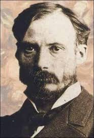
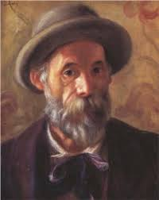

Імпресіонізм — мистецький напрямок, який виник у Франції в другій половині XIX століття. Він характеризується прагненням передати миттєві враження і відчуття від об'єкта або сцени, використовуючи гру світла і кольору. Основні риси імпресіонізму включають в себе зосередження на природному освітленні, живі кольори і динамічні мазки пензля.
| Клод Моне | Едгар Дега | П'єр-Огюст Ренуар |
|---|---|---|
|  | |
 |
| Дізнатись більше | Дізнатись більше | Дізнатись більше |
| Клод Моне — один із засновників імпресіонізму, відомий своїми пейзажами та серіями картин, зокрема "Водяні лілії". | Едгар Дега — відомий своїми зображеннями балерин та сцен із паризького життя. | П'єр-Огюст Ренуар — відомий своїми портретами та зображеннями паризьких кафе і танцювальних залів. |